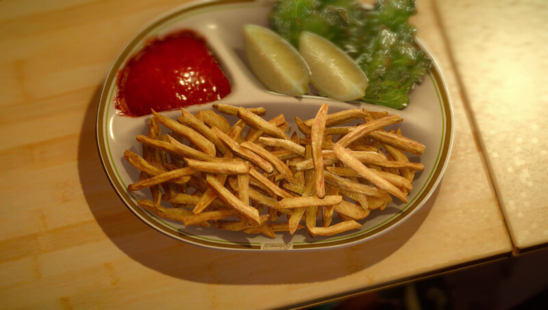

Dish and Chips
Active cooking time: 30 mins | Total cooking time: 1 hr 15 mins | Serves 1-2

This is one of Noct's favorite dishes. Too bad nobody ever told him that
potatoes are botanically classified as a vegetable...
Ingredients
- 2 medium russet potatoes
- 1 tbsp olive oil (15mL)
- 1⁄2 tsp salt (1.5g)
- (optional) chili powder, to taste
- (optional) cumin, to taste
- (optional) black pepper, to taste
- (optional) other desired seasonings, to taste
How to
- Thoroughly wash (and optionally peel) the potatoes. Using a very
sharp knife, cut the potatoes length-wise into thin fries,
approximately 1⁄4 inches (6mm) wide.
- (Optional) Add the fries to a large bowl and cover with cold water.
Soak for 30 minutes (or up to overnight in the fridge) to remove
excess potato starch. While this step isn’t technically necessary, the
resulting fries will be more delicious. If you’re in a hurry, you can
also rinse the fries to remove surface starch.
- Preheat oven to 400°F (204°C). Drain and rinse the fries, then pat
dry using paper towels. In a large (dry) bowl, add the fries, oil, and
seasonings. Gently toss.
- Line a baking sheet with parchment paper or aluminum foil. Place
the fries on the sheet such that ideally there are no overlapping
fries.
- Bake for 15 minutes. Flip the fries with a spatula for even baking,
and continue baking for another 15 minutes.
- Increase the oven heat to 425°F (218°C), and continue baking for
another 10-15 minutes, until the outside edges look a little burnt.
- Remove, let cool, and enjoy!
Effect(s)
HP +300
Source